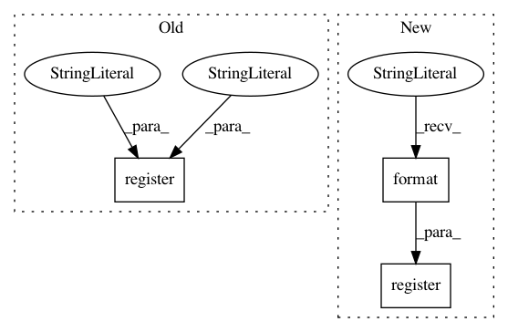

c4d964d28871954f2927adc564f2c054027c234f,src/python/pants/backend/jvm/tasks/jvm_compile/jvm_compile.py,JvmCompile,register_options,#Any#Any#,65
Before Change
@classmethod
def register_options(cls, register):
super(JvmCompile, cls).register_options(register)
register("--partition-size-hint", advanced=True, type=int, default=sys.maxint,
metavar="<// source files>",
help="Roughly how many source files to attempt to compile together. Set to a large "
"number to compile all sources together. Set to 0 to compile target-by-target.")
register("--jvm-options", advanced=True, type=list_option, default=[],
help="Run the compiler with these JVM options.")
After Change
register("--delete-scratch", advanced=True, default=True, action="store_true",
help="Leave intermediate scratch files around, for debugging build problems.")
register("--worker-count", advanced=True, type=int, default=1,
help="The number of concurrent workers to use when "
"compiling with {task}.".format(task=cls._name))
register("--size-estimator", advanced=True,
choices=list(cls.size_estimators.keys()), default="filesize",
help="The method of target size estimation.")
In pattern: SUPERPATTERN
Frequency: 3
Non-data size: 3
Instances
Project Name: pantsbuild/pants
Commit Name: c4d964d28871954f2927adc564f2c054027c234f
Time: 2015-09-22
Author: stuhood@gmail.com
File Name: src/python/pants/backend/jvm/tasks/jvm_compile/jvm_compile.py
Class Name: JvmCompile
Method Name: register_options
Project Name: pantsbuild/pants
Commit Name: 1d65d4aaf0c3ee81cccf5824c0bd34e53e0130d4
Time: 2018-07-02
Author: 1305167+cosmicexplorer@users.noreply.github.com
File Name: src/python/pants/backend/native/subsystems/xcode_cli_tools.py
Class Name: XCodeCLITools
Method Name: register_options
Project Name: ilastik/ilastik
Commit Name: 050b110146f3ce8cb3d3a7cb7ef34363fede1edd
Time: 2014-03-04
Author: bergs@janelia.hhmi.org
File Name: ilastik/applets/labeling/labelingGui.py
Class Name: LabelingGui
Method Name: _updateLabelShortcuts